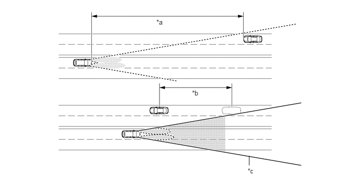
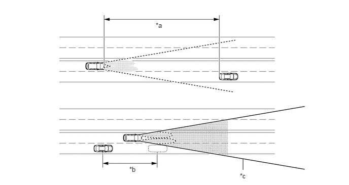

主要零部件的功能
| 零部件 | 功能 |
|---|---|
|
*1：汽油车型 *2：HV 车型 |
|
| 前向识别摄像机 | 根据来自摄像机传感器的图片信息，识别迎面车辆、前方车辆的灯光和其他灯光后，确定点亮和熄灭远光的时间。然后，传感器发送远光请求信号至主车身 ECU（多路网络车身 ECU）。 |
| 主车身 ECU（多路网络车身 ECU） | ·
接收到来自自动远光开关的开关信号。 ·
接收到来自转向传感器的 AUTO 或 HEAD 位置信号和远光位置信号。 ·
接收到来自前向识别摄像机的远光请求信号并将信号传输至左侧/右侧前照灯 ECU 分总成。 |
| 左侧前照灯 ECU 分总成 | 接收远光请求信号并点亮远光（左侧）。 |
| 右侧前照灯 ECU 分总成 | 接收远光请求信号并点亮远光（右侧）。 |
| ECM*1 | 输出信号以指示换档杆置于 R。根据此信号，前向识别摄像机确定车辆移动的方向。 |
| 混合动力车辆控制 ECU*2 | |
| 制动执行器总成*1
·
防滑控制 ECU |
输出关于驱动轮平均速度的信息。前向识别摄像机使用此信息，以控制自动远光系统在远光和近光之间的切换。 |
| 带主缸的制动助力器总成*2
·
防滑控制 ECU |
|
| 组合仪表总成 | ·
自动远光系统激活时，自动远光指示灯点亮以提醒驾驶员。 ·
开启远光时，点亮远光指示灯以提醒驾驶员。 ·
检测到自动远光系统内故障时显示警告信息。 |
| 空气囊 ECU 总成 | 输出横摆率信息。 |
| 自动灯光控制传感器 | 检测环境光照水平。 |
| 自动远光开关 | 输出开关打开信号至主车身 ECU（多路网络车身 ECU）。 |
| 前照灯变光开关总成
·
灯光控制开关 ·
前照灯变光开关 |
输出灯光控制开关和前照灯变光开关信号。 |
| 转向传感器 | 接收来自前照灯变光开关总成的灯光控制开关信号和前照灯变光开关信号并将其发送至主车身 ECU（多路网络车身 ECU）。 |
系统控制
| 功能 | 工作条件 |
|---|---|
|
*1：汽油车型 *2：HV 车型 |
|
| 激活 | 满足以下所有条件时，自动远光系统激活且自动远光指示灯点亮：
·
将发动机开关置于 ON (IG) 位置。*1 ·
电源开关置于 ON (IG) 位置。*2 ·
灯光控制开关（前照灯变光开关总成）置于 AUTO 或 HEAD 位置且近光前照灯点亮。 ·
前照灯变光开关（前照灯变光开关总成）置于远光位置。 ·
自动远光开关置于 ON 位置。 ·
换档杆置于 R 以外的任何位置。 |
| 开启远光 | 满足以下所有条件时，自动远光系统在短暂延迟后开启远光：
·
车速高于约 30 km/h (19 mph)。 ·
车辆前方区域光线暗淡。 ·
前照灯点亮时迎面无车辆。 ·
尾灯点亮时前方无车辆。 ·
前方街道沿路很少有路灯。 |
| 关闭远光 | 满足以下任一条件时，自动远光系统在短暂延迟后关闭远光：
·
车速低于约 25 km/h (16 mph)。 ·
车辆前方区域光线不暗淡。 ·
检测到点亮前照灯的迎面车辆。 ·
检测到点亮尾灯的前方车辆。 ·
前方街道沿路有多盏路灯。 |
功能
经过迎面车辆时：
在距迎面车辆约 800 m (2625 ft.) 以内时，自动远光系统关闭远光。
迎面车辆在摄像机传感器检测范围以外经过时，在短暂延迟后自动远光系统开启远光。

| *a | 800 m (2625 ft.) | *b | 延迟 |
| *c | 摄像机传感器角度 | - | - |
检测范围随检测到的物体变化而变化。
远光开启和关闭时间随迎面（和前方）车辆灯光强度的变化而变化。
经过前方车辆时：
在距前方车辆约 600 m (1969 ft.) 时，自动远光系统关闭远光。
前方车辆在摄像机传感器检测范围以外经过时，在短暂延迟后自动远光系统开启远光。

| *a | 600 m (1969 ft.) | *b | 延迟 |
| *c | 摄像机传感器角度 | - | - |
远光开启和关闭时间随前方车辆灯光强度的变化而变化。
诊断
主车身 ECU（多路网络车身 ECU）检测到自动远光控制系统内故障时，在存储器中存储诊断故障码 (DTC)。
采用 Global TechStream (GTS) 可读取 DTC。有关详情，请参考修理手册。